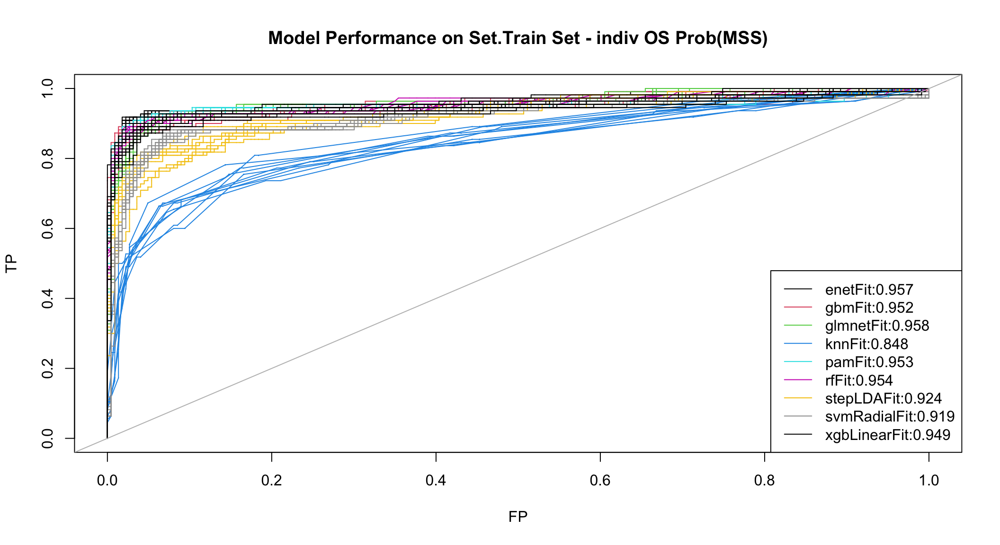
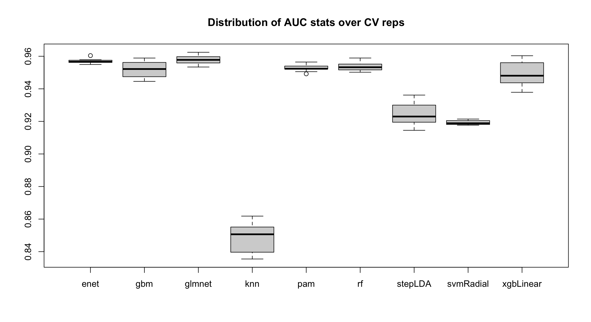

Section 4 Compare Predictive Models
Here we compare predictive models in terms of:
- Processing time
- Prediction accuracy and ROC on train samples
- Prediction accuracy and ROC on train
out-of-sample - Prediction accuracy and ROC on test samples
- Direct comparison of variable importance
4.1 Load Models
### BREAK CACHE
# Load Train and Test Data
load(file=file.path('RData', 'Train.Expr.mtx'))
load(file=file.path('RData', 'Test.Expr.mtx'))
load(file=file.path('RData', 'Train.Label.vec'))
load(file=file.path('RData', 'Test.Label.vec'))
CLASS1 <- as.character(sort(unique(Train.Label.vec))[1])
CLASS2 <- as.character(sort(unique(Train.Label.vec))[2])
# Load models (Only CV.5_10?)
ModelFit.vec <- list.files(file.path('RData'), 'Fit$')
FitSetCV.vec <- sapply(strsplit(ModelFit.vec, split='\\.'),
function(x) paste(x[1:3], collapse='.'))
ModelFit.lst <- split(sapply(strsplit(ModelFit.vec, split='\\.'), function(x) rev(x)[1]),
FitSetCV.vec)
# Get Model.col for plotting (only have one FitSetCV values here. could have many)
Model.col <- as.numeric(as.factor(ModelFit.lst[[1]]))
names(Model.col) <- ModelFit.lst[[1]]
cat("Found", length(ModelFit.vec), 'models:\n')## Found 9 models: print(ModelFit.lst)## $Top30pVarGenes.CV.5_10
## [1] "gbmFit" "glmnetFit" "knnFit" "pamFit" "rfFit"
## [6] "stepLDAFit" "svmRadialFit" "xgbLinearFit"
##
## $Top60VarGenes.CV.10_30
## [1] "glmnetFit" # Load Models for single set (we cd have more than one set in FitSetCV.vec)
SET <- names(ModelFit.lst)[1]
Set.ModelFit.lst <- lapply(ModelFit.lst[[SET]],
function(MF) {
loadObj(paste(SET, MF, sep='.'), 'ModelFit')
ModelFit})
names(Set.ModelFit.lst) <- ModelFit.lst[[SET]]4.2 Compare Times
### BREAK CACHE
Set.ModelTimes.frm <- do.call('rbind', lapply(Set.ModelFit.lst,
function(LL) c(all=LL$times$everything)))###, final=LL$times$final)))
knitr::kable(t(Set.ModelTimes.frm), digits=2,
caption="Compute times") %>%
kableExtra::kable_styling(full_width = F)| gbmFit | glmnetFit | knnFit | pamFit | rfFit | stepLDAFit | svmRadialFit | xgbLinearFit | |
|---|---|---|---|---|---|---|---|---|
| all.user.self | 13.32 | 7.30 | 2.81 | 5.00 | 96.90 | 522.52 | 19.22 | 17.67 |
| all.sys.self | 0.49 | 0.42 | 1.71 | 0.52 | 0.77 | 3.37 | 1.63 | 0.53 |
| all.elapsed | 642.98 | 92.40 | 5079.35 | 28.83 | 18379.77 | 24023.71 | 501.06 | 28470.81 |
| all.user.child | 5629.85 | 905.31 | 30945.02 | 225.27 | 50295.81 | 60883.12 | 5285.34 | 49661.41 |
| all.sys.child | 64.28 | 39.55 | 943.51 | 28.11 | 122.04 | 232.92 | 162.72 | 238.33 |
4.3 Compare Prediction Accuracy
4.3.1 Train Data Accuracy
### BREAK CACHE
suppressMessages(require(caret))
# Train - these are fitting errors
Set.Train.Pred.lst <- suppressMessages(predict(Set.ModelFit.lst))
#, newdata=Train.SelGenes.Expr.mtx))
Set.Train.TruthTable.frm <- do.call('rbind', lapply(Set.Train.Pred.lst,
function(PRED) {
truth.vec <- as.vector(table(PRED, Train.Label.vec))#/length(Train.Label.vec)
# ASSUMING MSI is FIRST LABEL of CLASS
names(truth.vec) <- c('TN', 'FP', 'FN', 'TP')
truth.vec}))
knitr::kable(data.frame(cbind(Set.Train.TruthTable.frm,
Set.Train.TruthTable.frm/length(Train.Label.vec))),
digits=2, align='c', caption='Model CV Accuracy') %>%
kableExtra::kable_styling(full_width = F)| TN | FP | FN | TP | TN.1 | FP.1 | FN.1 | TP.1 | |
|---|---|---|---|---|---|---|---|---|
| gbmFit | 103 | 7 | 1 | 222 | 0.31 | 0.02 | 0.00 | 0.67 |
| glmnetFit | 66 | 44 | 1 | 222 | 0.20 | 0.13 | 0.00 | 0.67 |
| knnFit | 14 | 96 | 0 | 223 | 0.04 | 0.29 | 0.00 | 0.67 |
| pamFit | 110 | 0 | 223 | 0 | 0.33 | 0.00 | 0.67 | 0.00 |
| rfFit | 110 | 0 | 0 | 223 | 0.33 | 0.00 | 0.00 | 0.67 |
| stepLDAFit | 87 | 23 | 7 | 216 | 0.26 | 0.07 | 0.02 | 0.65 |
| svmRadialFit | 103 | 7 | 1 | 222 | 0.31 | 0.02 | 0.00 | 0.67 |
| xgbLinearFit | 110 | 0 | 0 | 223 | 0.33 | 0.00 | 0.00 | 0.67 |
4.3.2 Out of Sample Train Data Accuracy
### BREAK CACHE
Set.ModelFit.osPred.mtx.lst <- lapply(Set.ModelFit.lst,
function(MF) {
MF.pred.mtx <- MF$pred
Rep.vec <- sapply(strsplit(MF$pred$Resample, split='\\.'),'[', 2)
rowIndex.vec <- sort(unique(MF$pred$rowIndex))
Pred.mtx <- do.call('cbind', lapply(split(MF$pred, Rep.vec),
function(RepMFpred.frm)
as.character(RepMFpred.frm[match(rowIndex.vec, RepMFpred.frm$rowIndex),'pred'])))
Pred.mtx})
# Use mode over reps as prediction
############################################
Set.ModelFit.osPred.vec.lst <- lapply(Set.ModelFit.osPred.mtx.lst,
function(PRED.mtx) apply(PRED.mtx,1,function(Pred.vec)
names(table(Pred.vec))[which.max(table(Pred.vec))]))
Set.Train.osPredMode.TruthTable.frm <- do.call('rbind', lapply(Set.ModelFit.osPred.vec.lst,
function(PRED) {
truth.vec <- as.vector(table(PRED, Train.Label.vec))#/length(Train.Label.vec)
# ASSUMING MSI is FIRST LABEL of CLASS
names(truth.vec) <- c('TN', 'FP', 'FN', 'TP')
truth.vec}))
knitr::kable(data.frame(cbind(Set.Train.osPredMode.TruthTable.frm,
Set.Train.osPredMode.TruthTable.frm/length(Train.Label.vec))),
digits=2, align='c', caption='Model Out-of-Sample Accuracy - Mode') %>%
kableExtra::kable_styling(full_width = F)| TN | FP | FN | TP | TN.1 | FP.1 | FN.1 | TP.1 | |
|---|---|---|---|---|---|---|---|---|
| gbmFit | 93 | 17 | 3 | 220 | 0.28 | 0.05 | 0.01 | 0.66 |
| glmnetFit | 62 | 48 | 1 | 222 | 0.19 | 0.14 | 0.00 | 0.67 |
| knnFit | 13 | 97 | 1 | 222 | 0.04 | 0.29 | 0.00 | 0.67 |
| pamFit | 96 | 14 | 4 | 219 | 0.29 | 0.04 | 0.01 | 0.66 |
| rfFit | 90 | 20 | 3 | 220 | 0.27 | 0.06 | 0.01 | 0.66 |
| stepLDAFit | 87 | 23 | 8 | 215 | 0.26 | 0.07 | 0.02 | 0.65 |
| svmRadialFit | 92 | 18 | 12 | 211 | 0.28 | 0.05 | 0.04 | 0.63 |
| xgbLinearFit | 95 | 15 | 5 | 218 | 0.29 | 0.05 | 0.02 | 0.65 |
############################################
# alternatively, can look at the osPred by rep
# and use mean for error rates
############################################
Set.Train.osPredMean.TruthTable.frm <- do.call('rbind', lapply(Set.ModelFit.osPred.mtx.lst,
function(PRED.mtx) {
TruthTable.mtx <- do.call('rbind', lapply(1:ncol(PRED.mtx),
function(CC) as.vector(table(PRED.mtx[,CC], Train.Label.vec)/length(Train.Label.vec))))
apply(TruthTable.mtx,2,mean)}))
colnames(Set.Train.osPredMean.TruthTable.frm) <- c('TN', 'FP', 'FN', 'TP')
knitr::kable(data.frame(Set.Train.osPredMean.TruthTable.frm),
digits=2, align='c', caption='Model Out-of-Sample Accuracy - MeanPred') %>%
kableExtra::kable_styling(full_width = F)| TN | FP | FN | TP | |
|---|---|---|---|---|
| gbmFit | 0.28 | 0.05 | 0.01 | 0.66 |
| glmnetFit | 0.19 | 0.15 | 0.00 | 0.67 |
| knnFit | 0.04 | 0.29 | 0.00 | 0.67 |
| pamFit | 0.29 | 0.04 | 0.01 | 0.66 |
| rfFit | 0.27 | 0.06 | 0.01 | 0.66 |
| stepLDAFit | 0.25 | 0.08 | 0.03 | 0.64 |
| svmRadialFit | 0.27 | 0.06 | 0.04 | 0.63 |
| xgbLinearFit | 0.28 | 0.05 | 0.02 | 0.65 |
4.3.3 Test Data Accuracy
### BREAK CACHE
suppressMessages(require(caret))
# Test - these are fitting errors
Set.Test.Pred.lst <- lapply(Set.ModelFit.lst,
function(MF) predict(MF, newdata=Test.Expr.mtx))## Warning in method$predict(modelFit = modelFit, newdata = newdata, submodels =
## param): kernlab class prediction calculations failed; returning NAs Set.Test.TruthTable.frm <- do.call('rbind', lapply(Set.Test.Pred.lst,
function(PRED) {
truth.vec <- as.vector(table(PRED, Test.Label.vec))#/length(Test.Label.vec)
# ASSUMING MSI is FIRST LABEL of CLASS
names(truth.vec) <- c('TN', 'FP', 'FN', 'TP')
truth.vec}))
knitr::kable(data.frame(cbind(Set.Test.TruthTable.frm,
Set.Test.TruthTable.frm/length(Test.Label.vec))),
digits=2, align='c', caption='Model Test Set Accuracy') %>%
kableExtra::kable_styling(full_width = F)| TN | FP | FN | TP | TN.1 | FP.1 | FN.1 | TP.1 | |
|---|---|---|---|---|---|---|---|---|
| gbmFit | 32 | 4 | 2 | 72 | 0.29 | 0.04 | 0.02 | 0.65 |
| glmnetFit | 21 | 15 | 1 | 73 | 0.19 | 0.14 | 0.01 | 0.66 |
| knnFit | 5 | 31 | 0 | 74 | 0.05 | 0.28 | 0.00 | 0.67 |
| pamFit | 34 | 2 | 4 | 70 | 0.31 | 0.02 | 0.04 | 0.64 |
| rfFit | 32 | 4 | 1 | 73 | 0.29 | 0.04 | 0.01 | 0.66 |
| stepLDAFit | 30 | 6 | 7 | 67 | 0.27 | 0.05 | 0.06 | 0.61 |
| svmRadialFit | 0 | 0 | 0 | 0 | 0.00 | 0.00 | 0.00 | 0.00 |
| xgbLinearFit | 31 | 5 | 4 | 70 | 0.28 | 0.05 | 0.04 | 0.64 |
4.4 Compare Models in Terms of ROC
4.4.1 Training Data ROC
### BREAK CACHE
# CHANGE THIS LINE TO CLEAR CACHE
suppressMessages(require(pROC))
################################
# Train
################################
# Get predicted probabilities
Set.Train.Prob.lst <- suppressMessages(predict(Set.ModelFit.lst, type='prob'))
Set.Train.ProbClass1.mtx <- do.call('cbind',
lapply(Set.Train.Prob.lst, function(x) x[,CLASS1]))
rownames(Set.Train.ProbClass1.mtx) <- names(Train.Label.vec)
# ROC
Set.Train.roc.mtx.lst <- lapply(colnames(Set.Train.ProbClass1.mtx), function(MM)
do.call('rbind', lapply(rev(sort(unique(Set.Train.ProbClass1.mtx))),
function(TS) {
TP <- sum(Set.Train.ProbClass1.mtx[,MM][Train.Label.vec==CLASS1] > TS, na.rm=T)
FP <- sum(Set.Train.ProbClass1.mtx[,MM][Train.Label.vec==CLASS2] > TS, na.rm=T)
c(TS=TS, TP=TP, FP=FP)}))
)
names(Set.Train.roc.mtx.lst) <- colnames(Set.Train.ProbClass1.mtx)
# Get auc
Set.Train.auc.vec <- sapply(1:ncol(Set.Train.ProbClass1.mtx), function(CC)
auc(Train.Label.vec, Set.Train.ProbClass1.mtx[,CC]))## Setting levels: control = MSI, case = MSS## Setting direction: controls > cases## Setting levels: control = MSI, case = MSS## Setting direction: controls > cases## Setting levels: control = MSI, case = MSS## Setting direction: controls > cases## Setting levels: control = MSI, case = MSS## Setting direction: controls > cases## Setting levels: control = MSI, case = MSS## Setting direction: controls > cases## Setting levels: control = MSI, case = MSS## Setting direction: controls > cases## Setting levels: control = MSI, case = MSS## Setting direction: controls > cases## Setting levels: control = MSI, case = MSS## Setting direction: controls > cases names(Set.Train.auc.vec) <- colnames(Set.Train.ProbClass1.mtx)
plot(x=range(do.call('c', lapply(Set.Train.roc.mtx.lst,
function(LL) LL[,'FP'])))/sum(Train.Label.vec==CLASS2),
y=range(do.call('c', lapply(Set.Train.roc.mtx.lst,
function(LL) LL[,'TP'])))/sum(Train.Label.vec==CLASS1),
xlab='FP', ylab='TP', type='n')
for(II in 1:length(Set.Train.roc.mtx.lst))
lines(x=Set.Train.roc.mtx.lst[[II]][,'FP']/sum(Train.Label.vec==CLASS2),
y=Set.Train.roc.mtx.lst[[II]][,'TP']/sum(Train.Label.vec==CLASS1),
col=Model.col[names(Set.Train.roc.mtx.lst)[II]])
abline(0,1, col='grey')
legend('bottomright',
legend=paste(names(Set.Train.roc.mtx.lst), ':',
round(Set.Train.auc.vec[names(Set.Train.roc.mtx.lst)],3),sep=''),
col=Model.col[names(Set.Train.roc.mtx.lst)],
lty=1)
title('Model Performance on Train Set')
4.4.2 Out-of-sample Train: Average over Repeats
### BREAK CACHE
suppressMessages(require(pROC))
# Get predicted probabilities
Set.ModelFit.osProbClass1.mtx.lst <- lapply(Set.ModelFit.lst,
function(MF) {
MF.pred.mtx <- MF$pred
Rep.vec <- sapply(strsplit(MF$pred$Resample, split='\\.'),'[', 2)
rowIndex.vec <- sort(unique(MF$pred$rowIndex))
ProbClass1.mtx <- do.call('cbind', lapply(split(MF$pred, Rep.vec),
function(RepMFpred.frm)
RepMFpred.frm[match(rowIndex.vec, RepMFpred.frm$rowIndex),CLASS1]))
ProbClass1.mtx})
#################################
# Use average osProb
#################################
Set.Train.mean_osProbClass1.mtx <- do.call('cbind', lapply(Set.ModelFit.osProbClass1.mtx.lst,
function(osProbClass1.mtx) apply(osProbClass1.mtx,1,mean)))
rownames(Set.Train.mean_osProbClass1.mtx) <- names(Train.Label.vec)
# ROC
Set.Train.mean_osProbClass1.roc.mtx.lst <-
lapply(colnames(Set.Train.mean_osProbClass1.mtx), function(MM)
do.call('rbind', lapply(rev(sort(unique(Set.Train.mean_osProbClass1.mtx))),
function(TS) {
TP <- sum(Set.Train.mean_osProbClass1.mtx[,MM][Train.Label.vec==CLASS1] > TS, na.rm=T)
FP <- sum(Set.Train.mean_osProbClass1.mtx[,MM][Train.Label.vec==CLASS2] > TS, na.rm=T)
c(TS=TS, TP=TP, FP=FP)}))
)
names(Set.Train.mean_osProbClass1.roc.mtx.lst) <- colnames(Set.Train.mean_osProbClass1.mtx)
# Get auc
Set.Train.mean_osProbClass1.auc.vec <- sapply(1:ncol(Set.Train.mean_osProbClass1.mtx), function(CC)
auc(Train.Label.vec, Set.Train.mean_osProbClass1.mtx[,CC]))## Setting levels: control = MSI, case = MSS## Setting direction: controls > cases## Setting levels: control = MSI, case = MSS## Setting direction: controls > cases## Setting levels: control = MSI, case = MSS## Setting direction: controls > cases## Setting levels: control = MSI, case = MSS## Setting direction: controls > cases## Setting levels: control = MSI, case = MSS## Setting direction: controls > cases## Setting levels: control = MSI, case = MSS## Setting direction: controls > cases## Setting levels: control = MSI, case = MSS## Setting direction: controls > cases## Setting levels: control = MSI, case = MSS## Setting direction: controls > cases names(Set.Train.mean_osProbClass1.auc.vec) <- colnames(Set.Train.mean_osProbClass1.mtx)
plot(x=range(do.call('c', lapply(Set.Train.mean_osProbClass1.roc.mtx.lst,
function(LL) LL[,'FP'])))/sum(Train.Label.vec==CLASS2),
y=range(do.call('c', lapply(Set.Train.mean_osProbClass1.roc.mtx.lst,
function(LL) LL[,'TP'])))/sum(Train.Label.vec==CLASS1),
xlab='FP', ylab='TP', type='n')
for(II in 1:length(Set.Train.mean_osProbClass1.roc.mtx.lst))
lines(x=Set.Train.mean_osProbClass1.roc.mtx.lst[[II]][,'FP']/sum(Train.Label.vec==CLASS2),
y=Set.Train.mean_osProbClass1.roc.mtx.lst[[II]][,'TP']/sum(Train.Label.vec==CLASS1),
col=Model.col[names(Set.Train.roc.mtx.lst)[II]])
abline(0,1, col='grey')
legend('bottomright',
legend=paste(names(Set.Train.mean_osProbClass1.auc.vec), ':',
round(Set.Train.mean_osProbClass1.auc.vec,3),sep=''),
col=Model.col[names(Set.Train.mean_osProbClass1.auc.vec)], lty=1)
title('Model Performance on Train Set - OS mean Prob(MSS)')
4.4.3 Out-of-sample Set.Train: Individual Repeats
### BREAK CACHE
suppressMessages(require(pROC))
#################################
# Replot ROC keep individual rep osProbClass1
#################################
Set.Train.indiv_osProbClass1.mtx <- do.call('cbind', lapply(names(Set.ModelFit.osProbClass1.mtx.lst),
function(MODEL) {
osProbClass1.mtx <- Set.ModelFit.osProbClass1.mtx.lst[[MODEL]]
colnames(osProbClass1.mtx) <- paste(MODEL, colnames(osProbClass1.mtx),sep='.')
osProbClass1.mtx}))
rownames(Set.Train.indiv_osProbClass1.mtx) <- names(Train.Label.vec)
# ROC
Set.Train.indiv_osProbClass1.roc.mtx.lst <- lapply(colnames(Set.Train.indiv_osProbClass1.mtx), function(MM)
do.call('rbind', lapply(rev(sort(unique(Set.Train.indiv_osProbClass1.mtx))),
function(TS) {
TP <- sum(Set.Train.indiv_osProbClass1.mtx[,MM][Train.Label.vec==CLASS1] > TS, na.rm=T)
FP <- sum(Set.Train.indiv_osProbClass1.mtx[,MM][Train.Label.vec==CLASS2] > TS, na.rm=T)
c(TS=TS, TP=TP, FP=FP)}))
)
names(Set.Train.indiv_osProbClass1.roc.mtx.lst) <- colnames(Set.Train.indiv_osProbClass1.mtx)
# Get auc
Set.Train.indiv_osProbClass1.auc.vec <- sapply(1:ncol(Set.Train.indiv_osProbClass1.mtx), function(CC)
auc(Train.Label.vec, Set.Train.indiv_osProbClass1.mtx[,CC]))## Setting levels: control = MSI, case = MSS## Setting direction: controls > cases## Setting levels: control = MSI, case = MSS## Setting direction: controls > cases## Setting levels: control = MSI, case = MSS## Setting direction: controls > cases## Setting levels: control = MSI, case = MSS## Setting direction: controls > cases## Setting levels: control = MSI, case = MSS## Setting direction: controls > cases## Setting levels: control = MSI, case = MSS## Setting direction: controls > cases## Setting levels: control = MSI, case = MSS## Setting direction: controls > cases## Setting levels: control = MSI, case = MSS## Setting direction: controls > cases## Setting levels: control = MSI, case = MSS## Setting direction: controls > cases## Setting levels: control = MSI, case = MSS## Setting direction: controls > cases## Setting levels: control = MSI, case = MSS## Setting direction: controls > cases## Setting levels: control = MSI, case = MSS## Setting direction: controls > cases## Setting levels: control = MSI, case = MSS## Setting direction: controls > cases## Setting levels: control = MSI, case = MSS## Setting direction: controls > cases## Setting levels: control = MSI, case = MSS## Setting direction: controls > cases## Setting levels: control = MSI, case = MSS## Setting direction: controls > cases## Setting levels: control = MSI, case = MSS## Setting direction: controls > cases## Setting levels: control = MSI, case = MSS## Setting direction: controls > cases## Setting levels: control = MSI, case = MSS## Setting direction: controls > cases## Setting levels: control = MSI, case = MSS## Setting direction: controls > cases## Setting levels: control = MSI, case = MSS## Setting direction: controls > cases## Setting levels: control = MSI, case = MSS## Setting direction: controls > cases## Setting levels: control = MSI, case = MSS## Setting direction: controls > cases## Setting levels: control = MSI, case = MSS## Setting direction: controls > cases## Setting levels: control = MSI, case = MSS## Setting direction: controls > cases## Setting levels: control = MSI, case = MSS## Setting direction: controls > cases## Setting levels: control = MSI, case = MSS## Setting direction: controls > cases## Setting levels: control = MSI, case = MSS## Setting direction: controls > cases## Setting levels: control = MSI, case = MSS## Setting direction: controls > cases## Setting levels: control = MSI, case = MSS## Setting direction: controls > cases## Setting levels: control = MSI, case = MSS## Setting direction: controls > cases## Setting levels: control = MSI, case = MSS## Setting direction: controls > cases## Setting levels: control = MSI, case = MSS## Setting direction: controls > cases## Setting levels: control = MSI, case = MSS## Setting direction: controls > cases## Setting levels: control = MSI, case = MSS## Setting direction: controls > cases## Setting levels: control = MSI, case = MSS## Setting direction: controls > cases## Setting levels: control = MSI, case = MSS## Setting direction: controls > cases## Setting levels: control = MSI, case = MSS## Setting direction: controls > cases## Setting levels: control = MSI, case = MSS## Setting direction: controls > cases## Setting levels: control = MSI, case = MSS## Setting direction: controls > cases## Setting levels: control = MSI, case = MSS## Setting direction: controls > cases## Setting levels: control = MSI, case = MSS## Setting direction: controls > cases## Setting levels: control = MSI, case = MSS## Setting direction: controls > cases## Setting levels: control = MSI, case = MSS## Setting direction: controls > cases## Setting levels: control = MSI, case = MSS## Setting direction: controls > cases## Setting levels: control = MSI, case = MSS## Setting direction: controls > cases## Setting levels: control = MSI, case = MSS## Setting direction: controls > cases## Setting levels: control = MSI, case = MSS## Setting direction: controls > cases## Setting levels: control = MSI, case = MSS## Setting direction: controls > cases## Setting levels: control = MSI, case = MSS## Setting direction: controls > cases## Setting levels: control = MSI, case = MSS## Setting direction: controls > cases## Setting levels: control = MSI, case = MSS## Setting direction: controls > cases## Setting levels: control = MSI, case = MSS## Setting direction: controls > cases## Setting levels: control = MSI, case = MSS## Setting direction: controls > cases## Setting levels: control = MSI, case = MSS## Setting direction: controls > cases## Setting levels: control = MSI, case = MSS## Setting direction: controls > cases## Setting levels: control = MSI, case = MSS## Setting direction: controls > cases## Setting levels: control = MSI, case = MSS## Setting direction: controls > cases## Setting levels: control = MSI, case = MSS## Setting direction: controls > cases## Setting levels: control = MSI, case = MSS## Setting direction: controls > cases## Setting levels: control = MSI, case = MSS## Setting direction: controls > cases## Setting levels: control = MSI, case = MSS## Setting direction: controls > cases## Setting levels: control = MSI, case = MSS## Setting direction: controls > cases## Setting levels: control = MSI, case = MSS## Setting direction: controls > cases## Setting levels: control = MSI, case = MSS## Setting direction: controls > cases## Setting levels: control = MSI, case = MSS## Setting direction: controls > cases## Setting levels: control = MSI, case = MSS## Setting direction: controls > cases## Setting levels: control = MSI, case = MSS## Setting direction: controls > cases## Setting levels: control = MSI, case = MSS## Setting direction: controls > cases## Setting levels: control = MSI, case = MSS## Setting direction: controls > cases## Setting levels: control = MSI, case = MSS## Setting direction: controls > cases## Setting levels: control = MSI, case = MSS## Setting direction: controls > cases## Setting levels: control = MSI, case = MSS## Setting direction: controls > cases## Setting levels: control = MSI, case = MSS## Setting direction: controls > cases## Setting levels: control = MSI, case = MSS## Setting direction: controls > cases## Setting levels: control = MSI, case = MSS## Setting direction: controls > cases## Setting levels: control = MSI, case = MSS## Setting direction: controls > cases## Setting levels: control = MSI, case = MSS## Setting direction: controls > cases## Setting levels: control = MSI, case = MSS## Setting direction: controls > cases## Setting levels: control = MSI, case = MSS## Setting direction: controls > cases names(Set.Train.indiv_osProbClass1.auc.vec) <- colnames(Set.Train.indiv_osProbClass1.mtx)
Set.Train.mean_indiv_osProbClass1.auc.vec <- sapply(split(Set.Train.indiv_osProbClass1.auc.vec,
sapply(strsplit(names(Set.Train.indiv_osProbClass1.auc.vec), split='\\.'),'[',1)),
mean)
plot(x=range(do.call('c', lapply(Set.Train.indiv_osProbClass1.roc.mtx.lst,
function(LL) LL[,'FP'])))/sum(Train.Label.vec==CLASS2),
y=range(do.call('c', lapply(Set.Train.indiv_osProbClass1.roc.mtx.lst,
function(LL) LL[,'TP'])))/sum(Train.Label.vec==CLASS1),
xlab='FP', ylab='TP', type='n')
for(II in 1:length(Set.Train.indiv_osProbClass1.roc.mtx.lst))
lines(x=Set.Train.indiv_osProbClass1.roc.mtx.lst[[II]][,'FP']/sum(Train.Label.vec==CLASS2),
y=Set.Train.indiv_osProbClass1.roc.mtx.lst[[II]][,'TP']/sum(Train.Label.vec==CLASS1),
col=Model.col[sapply(strsplit(names(Set.Train.indiv_osProbClass1.roc.mtx.lst),'\\.'),'[',1)[II]])
abline(0,1, col='grey')
legend('bottomright',
legend=paste(names(Set.Train.mean_indiv_osProbClass1.auc.vec), ':',
round(Set.Train.mean_indiv_osProbClass1.auc.vec,3),sep=''),
col=Model.col[names(Set.Train.mean_indiv_osProbClass1.auc.vec)],lty=1)
title('Model Performance on Set.Train Set - indiv OS Prob(MSS)')
# Boxplot individual aucs
boxplot(split(Set.Train.indiv_osProbClass1.auc.vec,
sub('Fit','', sapply(strsplit(names(Set.Train.indiv_osProbClass1.auc.vec), split='\\.'),'[',1))))
title('Distribution of AUC stats over CV reps')
Set.Train.indiv_osProbClass1.auc.mtx <- do.call('rbind',
lapply(split(Set.Train.indiv_osProbClass1.auc.vec,
sapply(strsplit(names(Set.Train.indiv_osProbClass1.auc.vec), split='\\.'),'[',1)),
function(x) {Res=x; names(Res)<- sapply(strsplit(names(Res),split='\\.'),'[',2);Res}))
# This is redundant
#kable(data.frame(Set.Train.indiv_osProbClass1.auc.mtx,
#mean_os=Set.Train.mean_osProbClass1.auc.vec),
##Test = Test.auc.vec),
#digits=2, format='html',align='c')4.4.4 Compare Predicted Probabilities
With the repeated CV fitting set-up, we can examine the distribution of out-of-sample predictions. This is useful to both characterize the mode of errors occuring in a given model - are the errors due to bias or variability? - as well as chracterizing samples - some samples may be mis-labelled or hard to classify correctly.
### BREAK CACHE
if(sum(rownames(Set.Train.indiv_osProbClass1.mtx) !=
names(Train.Label.vec)))
stop("Sample ordering problem.")
# Reorder by Outcome
row.o <- order(Train.Label.vec, names(Train.Label.vec))
Col.Models.vec <- sapply(strsplit(colnames(Set.Train.indiv_osProbClass1.mtx), split='\\.'),'[',1)
par(mfrow=c(length(unique(Col.Models.vec)),1), mar=c(0,5,2,1), oma=c(5,0,1,0))
for(MOD in unique(Col.Models.vec)) {
Mod.cols <- which(Col.Models.vec==MOD)
box.out <-
boxplot(t(Set.Train.indiv_osProbClass1.mtx[row.o,Mod.cols]),
col=ifelse(Train.Label.vec[row.o]==CLASS1,3,2),
xaxt='n', outline=F)
title(MOD)
}
4.5 Look at Variable Importance
The caret package provides methods to extract variable importance through
the varImp function. Here we will extract these assessments
for each model and compare with genes which have been identified as associated with
MSS status in other studies:
### BREAK CACHE
MSSMSI.GeneSets.frm <- read.table(file=file.path('extData', "ColonCancerGeneSets.tab"),
header=T, sep='\t')
GeneSets.lst <- split(MSSMSI.GeneSets.frm$GeneSymbol, toupper(MSSMSI.GeneSets.frm$ListName))
GeneSets.lst <- GeneSets.lst[c('BANERJEA','CROCE','JORISSEN', 'KOINUMA', 'KRUHOFFER','MORI')]### BREAK CACHE
suppressMessages(require(caret))
suppressMessages(require(gbm))
# Load gene to probe set map
load(file=file.path('RData', 'GeneNameMap.vec'))
# Will also need the inverted map
GeneNameMap2.vec <- names(GeneNameMap.vec)
names(GeneNameMap2.vec) <- GeneNameMap.vec
Set.ModelFit.Top20.lst <- lapply(setdiff(names(Set.ModelFit.lst),
c("knnFit","sddaLDAFit","sddaQDAFit")),
function(MOD) {
#cat(MOD,'\n')
FIT <- Set.ModelFit.lst[[MOD]]
if(is.element(CLASS1, colnames(varImp(FIT)$imp)))
impVar.vec <- varImp(FIT)$imp[,CLASS1] else
impVar.vec <- varImp(FIT)$imp$Overall
top20.ndx <- rev(order(impVar.vec))[1:20]
varImp.vec <- impVar.vec[top20.ndx]
names(varImp.vec) <- rownames(varImp(FIT)$imp)[top20.ndx]
varImp.vec
})
names(Set.ModelFit.Top20.lst) <- setdiff(names(Set.ModelFit.lst),
c("knnFit","sddaLDAFit","sddaQDAFit"))
Top20.Name.vec <- unique(do.call('c', lapply(Set.ModelFit.Top20.lst, function(VV) names(VV))))
Top20.ProbeId.vec <- GeneNameMap.vec[Top20.Name.vec]
# Put together in a matrix
Top20.varImp.mtx <- do.call('cbind', lapply(Set.ModelFit.Top20.lst,
function(LL) LL[Top20.Name.vec]))
rownames(Top20.varImp.mtx) <- GeneNameMap.vec[Top20.Name.vec]
Top20.varImp.mtx[is.na(Top20.varImp.mtx)] <- 0
# Reoder by ovrall importance
varImp.med.vec <- apply(Top20.varImp.mtx,1,median)
Top20.varImp.mtx <- Top20.varImp.mtx[rev(order(varImp.med.vec)),]
Top20.varImp.frm <- data.frame(PROBEID=rownames(Top20.varImp.mtx),
Gene=GeneNameMap2.vec[rownames(Top20.varImp.mtx)],
round(Top20.varImp.mtx))
names(Top20.varImp.frm) <- sub('Fit', '', names(Top20.varImp.frm))
# Add geneset membership
Top20Genes.vec <- sapply(strsplit(Top20.varImp.frm$Gene, split='\\.'),'[',1)
Top20GeneSetElements.frm <- data.frame(do.call('cbind', lapply(GeneSets.lst,
function(GS) ifelse(is.element(Top20Genes.vec, GS),'Y',''))))
colnames(Top20GeneSetElements.frm) <- names(GeneSets.lst)
Top20.varImp.frm <- data.frame(Top20.varImp.frm, Top20GeneSetElements.frm)
o.v <- rev(order(apply(Top20.varImp.frm[,sub('Fit','',names(Set.ModelFit.Top20.lst))],
1, mean)))
REPLACE <- function() {
knitr::kable(Top20.varImp.frm[o.v,], align='c', row.names=F,
caption="Top 20 Features") %>%
kableExtra::kable_styling(full_width = F)
}
DT::datatable(Top20.varImp.frm[o.v,], rownames=F,
caption="Top 20 Features") 4.6 Classification: Discussion
4.6.1 Nearest shrunken centroids does well
The nearest shrunken centriod method described in Tibshirani et. al.[Tibshirani:2002aa] does very well both in terms of classification accuracy, computing time and simplicity of predictor. This has been our experience with many classification problems based on gene expression data.
4.6.2 Lack of agreement with literature gene sets
The variable importance assessment shows that the genes which are deemed important in the clsssifiers the we fitted have little overlap with the gene sets previously identified as being associated with MSS status. Part of this lack of overlap is certanly due to the gene selection filter which we applied here for computing purposes. This not a problem if we just want to build a classifier which predicts well. It is somewhat of a problem if we want to use biology to validate our empirically determined models. In that respect, the lack of agreement of gene lists across analyses is always a problem to contend with.
4.6.3 Models could be better optimized
Note that we did not attempt to optimize the model tuning parameters in any way and just used the default search grids for each model. While this may be a good choice on average, better performance could be obtained from some of the models by specifying a tuning parameter space which is better suited to the problem at hand. This requires a good understanding of each model and is beyond the scope of this vignette.
References
21. Banerjea, A., Ahmed, S., Hands, R.E., Huang, F., Han, X., Shaw, P.M., Feakins, R., Bustin, S.A., and Dorudi, S. (2004). Colorectal cancers with microsatellite instability display mRNA expression signatures characteristic of increased immunogenicity. Molecular Cancer 3, 21. Available at: http://dx.doi.org/10.1186/1476-4598-3-21.
22. Lanza, G., Ferracin, M., Gaf, R., Veronese, A., Spizzo, R., Pichiorri, F., Liu, C.-g., Calin, G.A., Croce, C.M., and Negrini, M. (2007). MRNA/microRNA gene expression profile in microsatellite unstable colorectal cancer. Molecular Cancer 6, 5454. Available at: http://www.ncbi.nlm.nih.gov/pmc/articles/PMC2048978/.
23. Jorissen, R.N., Gibbs, P., Christie, M., Prakash, S., Lipton, L., Desai, J., Kerr, D., Aaltonen, L.A., Arango, D., and Kruhffer, M. et al. Metastasis-associated gene expression changes predict poor outcomes in patients with dukesstage b and c colorectal cancer. Clinical cancer research : an official journal of the American Association for Cancer Research 15, 76427651. Available at: http://www.ncbi.nlm.nih.gov/pmc/articles/PMC2920750/.
24. Koinuma, K., Yamashita, Y., Liu, W., Hatanaka, H., Kurashina, K., Wada, T., Takada, S., Kaneda, R., Choi, Y.L., and Fujiwara, S.-I. et al. Epigenetic silencing of axin2 in colorectal carcinoma with microsatellite instability. Oncogene 25, 139146. Available at: http://dx.doi.org/10.1038/sj.onc.1209009.
25. Kruhffer, M., Jensen, J.L., Laiho, P., Dyrskjt, L., Salovaara, R., Arango, D., Birkenkamp-Demtroder, K., Srensen, F.B., Christensen, L.L., and Buhl, L. et al. Gene expression signatures for colorectal cancer microsatellite status and hnpcc. British Journal of Cancer 92, 22402248. Available at: http://www.ncbi.nlm.nih.gov/pmc/articles/PMC2361815/.
26. Mori, Y., Selaru, F.M., Sato, F., Yin, J., Simms, L.A., Xu, Y., Olaru, A., Deacu, E., Wang, S., and Taylor, J.M. et al. The impact of microsatellite instability on the molecular phenotype of colorectal tumors. Cancer Research 63, 4577. Available at: http://cancerres.aacrjournals.org/content/63/15/4577.abstract.